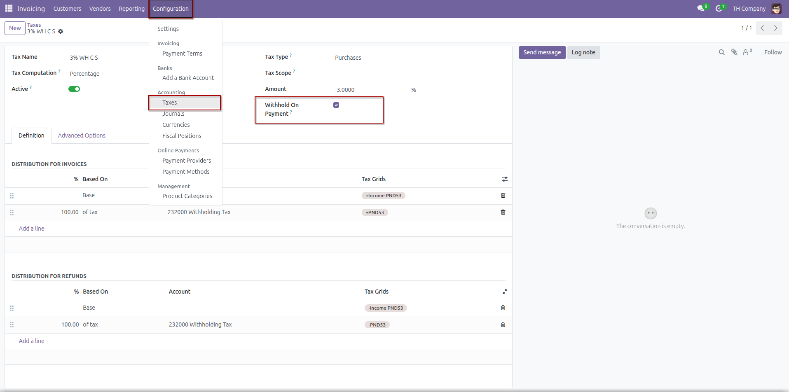
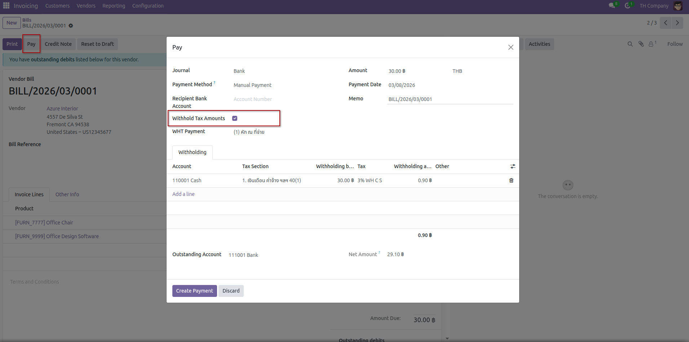
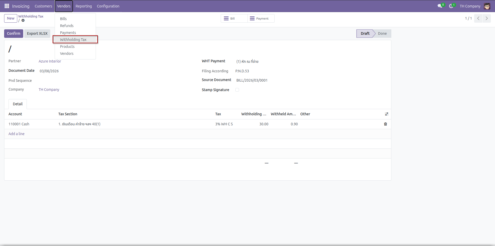
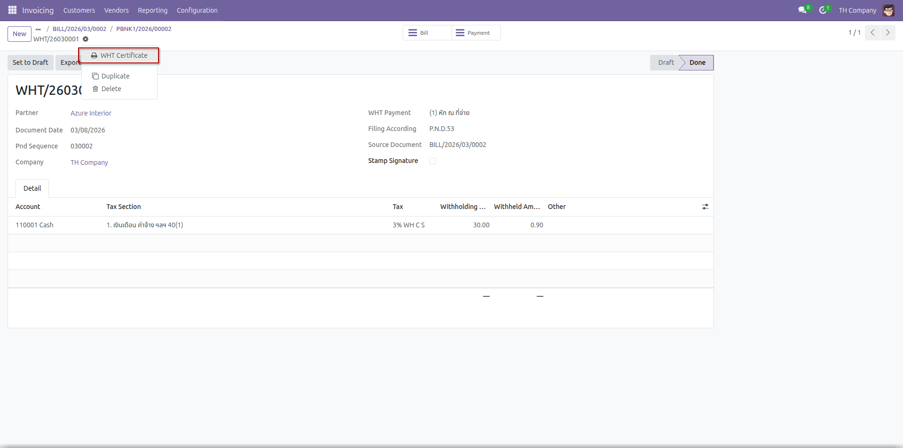
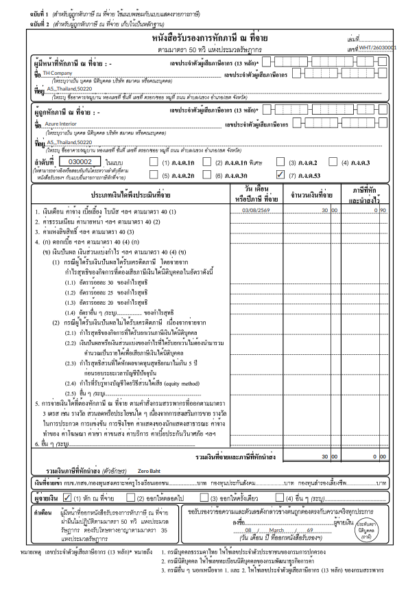
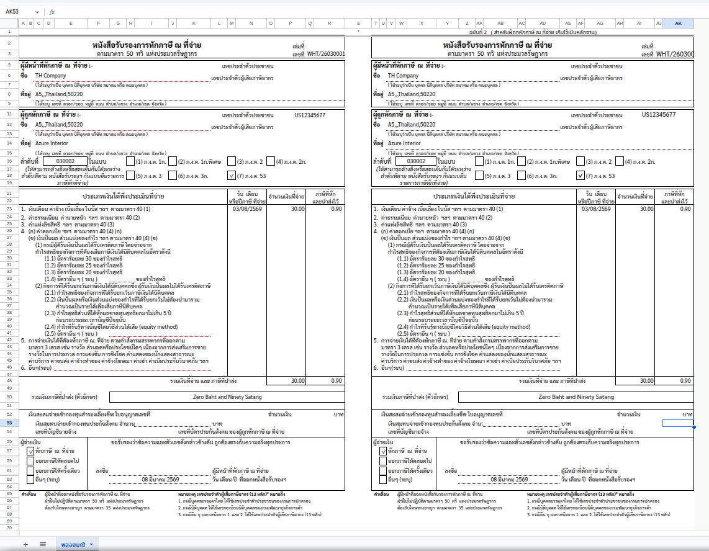

Create and manage Withholding Tax (WHT) documents linked to Payments in Odoo 18.
Includes WHT certificate printing, XLSX export, tax section support, and company-based sequence management.
This module extends the standard withholding tax workflow by linking Withholding Tax documents directly to Payments. It helps accounting teams manage WHT certificates more efficiently, with support for confirmation checks, document numbering, report printing, and XLSX export.
| Code | Description |
|---|---|
| (1) | Withheld at source |
| (2) | Issued for life |
| (3) | One-time issuance |
| (4) | Others |
The module helps standardize withholding tax processing from payment creation to certificate output.
If no WHT sequence is defined, the system can automatically create one during confirmation.
Replace these images with real screenshots from your module for better presentation.

Configuration Withholding Tax

Payment Register with Withholding Tax lines

Withholding Tax document form

Print WHT Certificate

Certificate PDF

Certificate Excel
Odd Lab
For installation help, customization, or issue reporting, please contact the author via the Odoo Apps support channel or project repository.